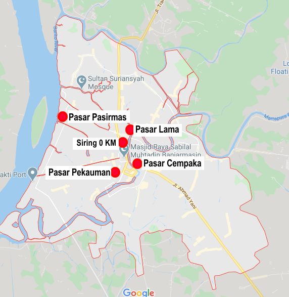
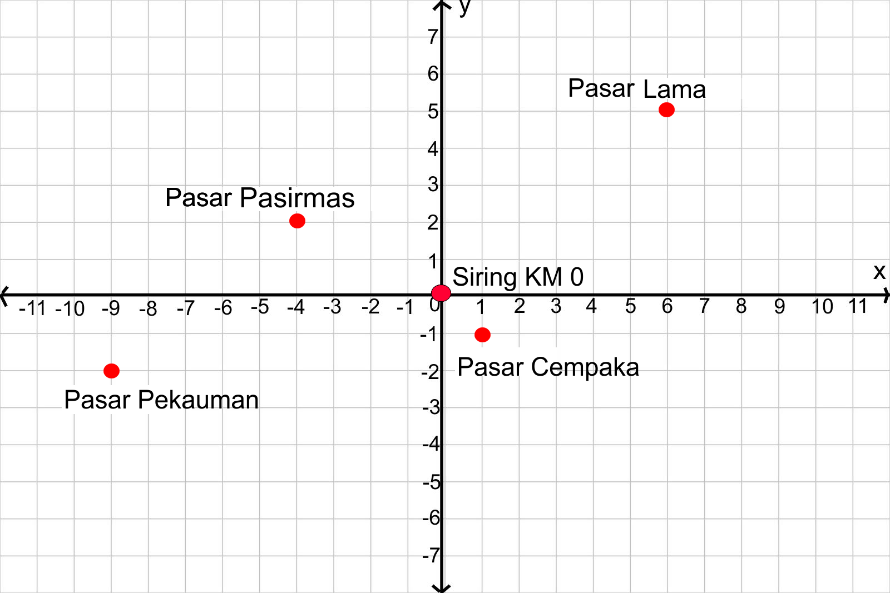
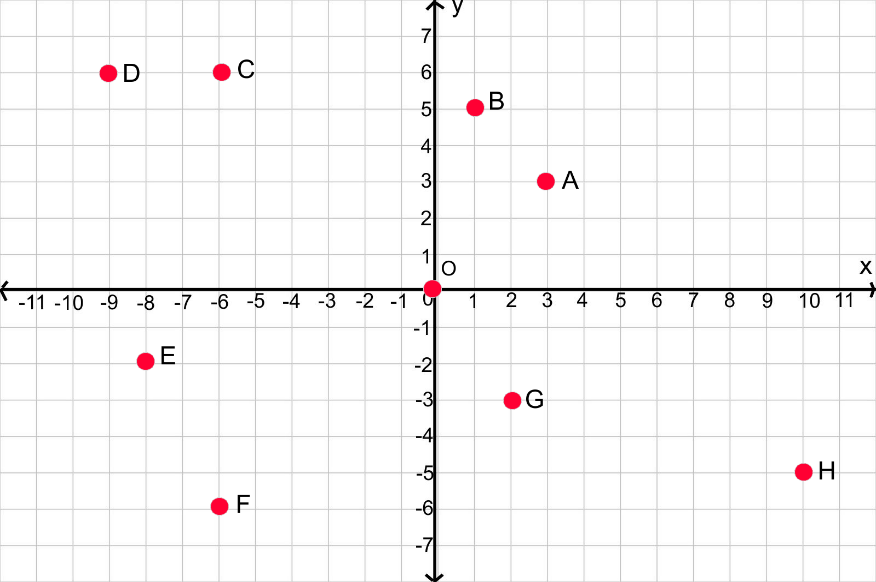

B. Posisi Titik Terhadap Sumbu Koordinat dan Titik Acuan
Tujuan Pembelajaran:
- Siswa dapat menentukan posisi titik terhadap garis sumbu-x dan sumbu-y pada bidang koordinat
- Siswa dapat menentukan posisi titik terhadap titik asal(0, 0) pada bidang koordinat
- Siswa dapat menentukan posisi titik terhadap titik acuan(a,b) pada bidang koordinat
- Siswa dapat menyelesaikan masalah yang berkaitan dengan koordinat kartesius.
Sebelumnya kita telah mempelajari bagaimana menentukan jarak titik terhadap sumbu-x dan sumbu-y.
Sekarang kita akan mempelajari bagaimana menentukan jarak titik terhadap titik asalnya.
2. Posisi Titik Terhadap Titik Asal(0, 0) Pada Bidang Koordinat

Masalah 2.2 : Perhatikan gambar berikut ini!

Gambar 2.4 : Peta Pasar Tradisional Banjarmasin
Banjarmasin memiliki banyak pasar tradisional yang tersebar di setiap kecamatan, diantaranya Pasar Lama,
Pasar Pasirmas, Pasar Pekauman dan Pasar Cempaka. Kemudian Pasar tradisional di Banjarmasin dijadikan titik koordinat dan
Taman Siring 0 KM dijadikan titik asal(0, 0) seperti gambari berikut ini.
Jika pasar tradisional di Banjarmasin dijadikan sebagai titik koordinat seperti gambar di bawah ini

Gambar 2.5 : Bidang Koordinat Pasar Tradisional Banjarmasin

Bagaimana caranya untuk menentukan posisi titik Pasar Lama, Pasar Pasirmas, Pasar Pekauman dan Pasar Cempaka terhadap titik asal(0, 0)?

Dari gambar bidang koordinat Gambar 2.5 kita dapat menentukan:
- Posisi titik Pasar Lama terhadap titik asal(0, 0),
- Posisi titik Pasar Pasirmas terhadap titik asal(0, 0)
- Posisi titik Pasar Pekauman terhadap titik asal(0, 0),
- Posisi titik Pasar Cempaka terhadap titik asal(0, 0).

Perhatikan gambar berikut ini kemudian lengkapilah kotak kosong di bawah ini dengan jawaban yang menurut anda benar berdasarkan gambar di bawah ini
Petunjuk:
- Isikan jawaban anda pada kolom yang kosong.
- Tekan tombol cek untuk mengecek jawaban.
- Tekan tombol 1,2,3,4,5 di bawah soal atau untuk mengganti ke nomor soal selanjutnya

Gambar 2.6 : Bidang Koordinat
1. Titik Koordinat : A(3,3)
Posisi Titik A terhadap Titik Asal(0, 0) adalah
3 satuan ke kanan,
2. Titik Koordinat : B(1,5)
Posisi Titik B terhadap Titik Asal(0, 0) adalah
1 satuan ke kanan,
3. Titik Koordinat : C(-6,6)
Posisi Titik C terhadap Titik Asal(0, 0) adalah
, 6 satuan ke atas
4. Titik Koordinat : D(-9,6)
Posisi Titik D terhadap Titik Asal(0, 0) adalah
9 satuan ke kiri,
5. Titik Koordinat : E()
Posisi Titik E terhadap Titik Asal(0, 0) adalah
8 satuan ke kiri, 2 satuan ke bawah
6. Titik Koordinat : F()
Posisi Titik F terhadap Titik Asal(0, 0) adalah
6 satuan ke kiri, 6 satuan ke bawah
7. Titik Koordinat : G()
Posisi Titik G terhadap Titik Asal(0, 0) adalah
2 satuan ke kanan, 3 satuan ke bawah
8. Titik Koordinat : H(10,-5)
Posisi Titik G terhadap Titik Asal(0, 0) adalah
10 satuan ke kanan,
❮
❯
Nomor Soal:
1
2
3
4
5
6
7
8